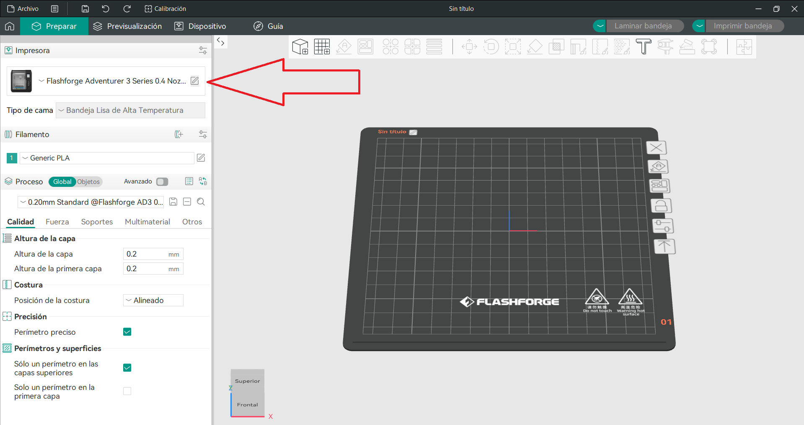
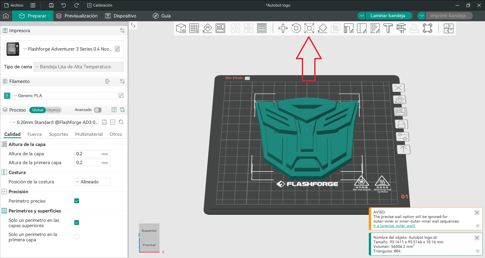
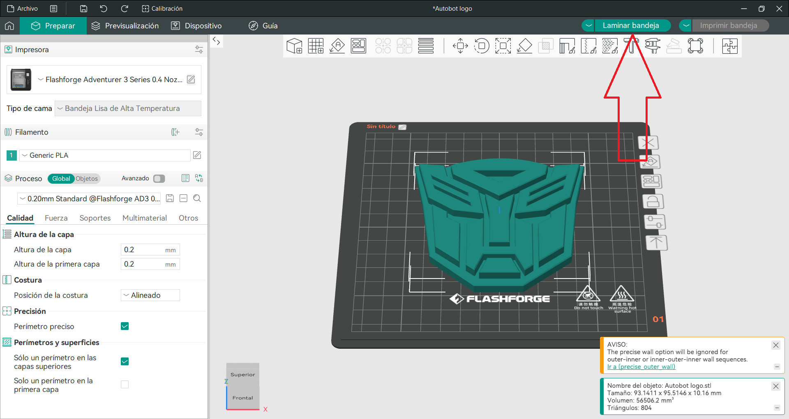

Guía de Uso Impresora 3D
Seleccione su tipo de usuario
¿Cómo deseas imprimir?
Impresión usando USB
- Abrir Orca FlashForge en la computadora
- Abrir la pestaña de "Preparar"
- Configurar nuestra impresora
- Seleccionar nuestro tipo de filamento
- Seleccionar el archivo que queremos imprimir
- Debemos de elegir un archivo compatible
- Diversas opciones
- Lamninar nuestra pieza
- Tiempo de Impresión
- Exportar Codigo G a nuestra usb
- Insertar USB en la impresora
- Seleccionar el archivo en la pantalla
- Presionar Start









Impresión por WiFi
- Conectar la impresora a la red WiFi
- Abrir Orca FlashForge
- Detectar la impresora en la red
- Preparar modelo
- Presionar "Send to Printer"
Mantenimiento Básico
- Limpieza de la cama con alcohol
- Revisar boquilla
- Cambio de filamento
- Verificar ventiladores